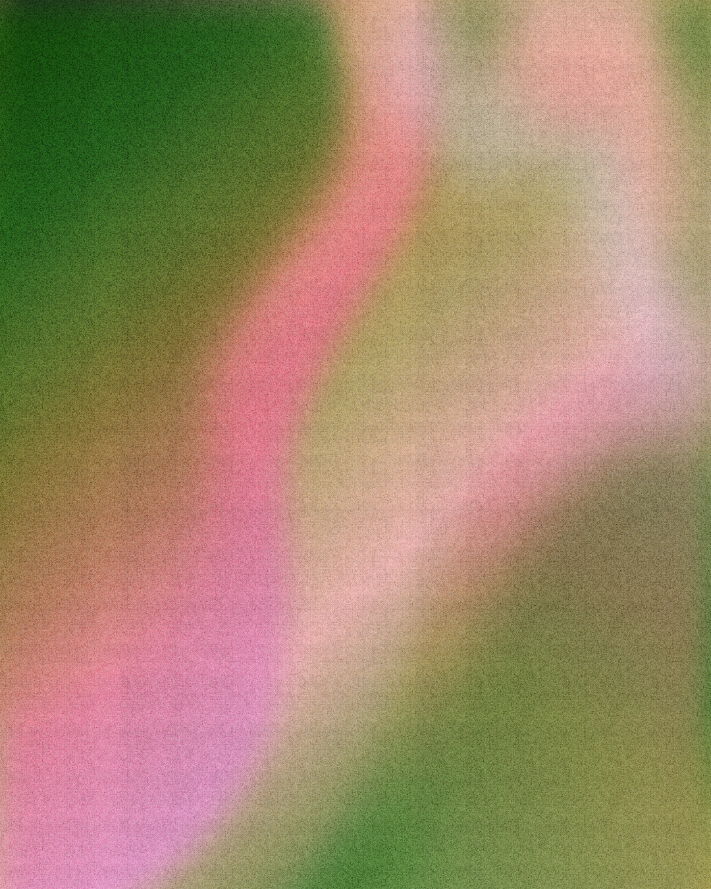

Disponible para nuevos proyectos
Código preciso,
diseño con alma.
Desarrollo productos digitales de principio a fin, interfaz, backend y datos. Y en paralelo, arte y danza. Dos oficios con el mismo criterio de detalle.

Disponible para nuevos proyectos
diseño con alma.
Desarrollo productos digitales de principio a fin, interfaz, backend y datos. Y en paralelo, arte y danza. Dos oficios con el mismo criterio de detalle.